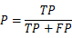
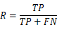
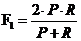
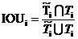
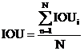
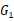
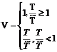
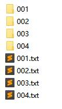

区域周界威胁行为检测：给定行人行为样本库，需要检测出视频中的行为，并识别是什么行为。
科目简介：此科目旨在考察算法模型对行人威胁行为的检测能力，要求选手从日间环境、强光环境、弱光环境、夜间微光环境、阴天低照度环境下的视频中检测出行人聚集、破坏设施、拍照、投掷、打架斗殴、袭击门岗6种威胁行为。
评价指标：
线上初赛：
初赛需要选手识别出视频中的行为是什么行为和该行为出现的时间段。采用score和IOU作为评价指标，结果越大越好，计算步骤如下：
1） 计算score：
首先计算识别准确率P和召回率R：


其中，TP为正确识别的行为数；FP为选手提交结果中识别错误的行为数；FN为行为测试集中未能正确识别的行为数。则，F1 score计算如下：

2） 计算IOU：
针对第个行为，设选手检测到的行为出现的时间段为，实际行为出现的时间段为，则

设视频中总共出现N个行为，总体的IOU为：

3） 总体得分为：
初赛总成绩根据高低进行排名。
现场决赛：
决赛采用score、IOU和识别速度作为评价指标，结果越大越好。
score、IOU加权计算公式同初赛，用表示。
识别速度：设视频长度为T秒，选手程序处理时间为秒，识别速度V定义如下：

决赛比测成绩将基于和识别速度进行加权。决赛比测成绩加权公式：
=0.7*+0.3*V
注：选手程序处理时间包括建库时间及所有测试视频的处理时间。
竞赛数据集：
训练集、测试集由承办方采集。目标威胁行为行人聚集、破坏设施、拍照、投掷、打架斗殴、袭击门岗6类。
参赛队伍的测试程序需具有如下数据输入输出格式：
输入参数：
1）视频文件路径名称的txt文档：其中文档的每一行为视频路径。
test/001.mp4
test/002.mp4
输出参数：
输出内容为一文件夹，文件夹下包括与测试视频同名的文件夹及与视频同名的txt文档。详细内容如下：
1）文件夹：文件夹名称与视频名称相同，如001。文件夹中存放该视频中识别出来的人脸截图；
2）txt文档：文档名称与处理的视频名称相同。文档的每一行包含如下内容：行为的开始和结束时间，一张最有代表性的行为截图的路径，行为标号。示例如下：
00:01:23 00:01:42 001/002175_005_1.jpg 1
其中，
00:01:23为某行为的开始时间；
00:01:42为该行为的结束时间；
001/002075_005_1.jpg为保存的行为截图位置：(含义如下：001为视频文件同名的文件夹；002075_005_1.jpg为视频中行为截图，002075为该截图出现的视频帧号，005为该帧中的行为截图序号；1表示行为标号，为1~7)
1为行为标号。其中，行为和标号关系如下表：
|
行为种类 |
标号 |
|
行人聚集 |
1 |
|
破坏设施 |
2 |
|
拍照 |
3 |
|
投掷 |
4 |
|
打架斗殴 |
5 |
|
袭击他人 |
6 |
|
正常行为 |
7 |
最终提交的文件格式如下：

注：
① 每个行为输出一张只包含该行为的截图;
② 正常行为不需要输出识别结果（如果一段视频中仅包含正常行为，仍需要生成其对应的同名txt文件，文件内容为空）；
③ 请务必保证输出时间格式为HH:MM:SS，其中HH为时，MM为分，SS为秒；
④ 目标尺寸（宽*高）小于30*90像素的目标不进行威胁行为的识别。